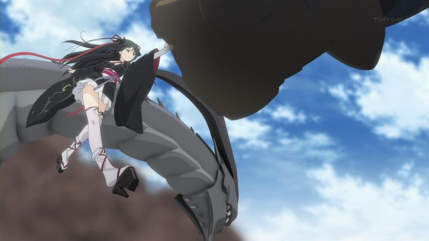

A good anime can come out of nowhere. Sometimes, a poor looking show can surprise you. But sometimes, you should know better. "Unbreakable Machine Doll" had an interesting premise and setting, but ultimately doesn't take full advantage of that within it's single 12-episode season, and not unsurprisingly, wastes a bit too much time on sexy fanservice for laughs.To start: who doesn't like steampunk? Shouldn't there be more of it in anime? "Unbreakable Machine Doll" is one of the few unapologetically "steampunk" anime you can find. Set in a alternate fantasy world, scientists have learned to create humanoid machines, a mix of science and magic they call "Machinart." The automatons are meant primarily for combat, weaponized. The lead character is Raishin, a gifted teenager with his own automaton named Yaya, who appears as a young black-haired girl with Japanese attire and red ribbons. Raishin travels with her to enroll at a prestigious academy in England, dedicated to Machinart. He fully intends to train to become the "Wiseman," a title bestowed in a combat competition.There is a lot of interesting lore here. It's difficult not to compare "Unbreakable Machine Doll" and its' European-school setting to the successful "Harry Potter" franchise. Raishin is an interesting character with a background providing strong motivations to become the "Wiseman." The English dub puts extra effort in selling that setting: most of the characters have distinctive British or Scottish accents (except Raishin, Yaya, and his old mentor, of course: being the leads, they are naturally Japanese, which means they sound purely American in the English dub). However, the anime takes a hard detour from Raishin's main goal about halfway in, perhaps because the light novels it was based on stalled a bit in their publication. A antagonist takes up the final arc of the 12 episodes, and while it ends that conflict in the final episode, it leaves no closure for the main adventure. We don't know if Raishin succeeds in becoming the "Wiseman." A few other mysteries are left wide open, begging for a second season that was fated to never come.  The story might have been more forgivable if so much time wasn't wasted on Yaya's personality. Her history is also fascinating, but the show leans more into romantic-comedy than action-drama whenever she is present. Naturally, she loves her "master," always making sexual advances at him, and getting jealous whenever Raishin talks to another girl. One animation shot of her is reused twice ("if you want to see a girl's panties, you can just see mine!"). A little comedy and fanservice isn't always a bad thing, but in "Unbreakable Machine Doll," it's especially frustrating, since a much more interesting plot is waiting beyond these jokes. Again, the lack of a conclusive ending in the anime factors in: if half of the sex jokes were removed, and perhaps the side-story at the end shortened, we might have had a full episode more to provide a better written ending, if only to better hint at what would come next for this cast.The visual production is generally good. The characters have softer outlines to them that make the show feel a bit more distinctive, and costume designs and color palettes sell the steampunk theme well. Animation is generally fine, although it relies a bit too much on 3D animation during action scenes. It does take advantage of it, using camera motion that would make 2D animation very difficult, but the shift between the two methods isn't unnoticeable. "Unbreakable Machine Doll" is simply an OK show, one that might be slightly higher on your radar because of the steampunk style. It's especially frustrating because there was so much potential in it. Enough so for me to recommend reading the books, perhaps. But not the anime.
- "Ani" More reviews can be found at : https://2danicritic.github.io/ Previous review: review_Typhoon_Noruda Next review: review_Unico_in_the_Island_of_Magic